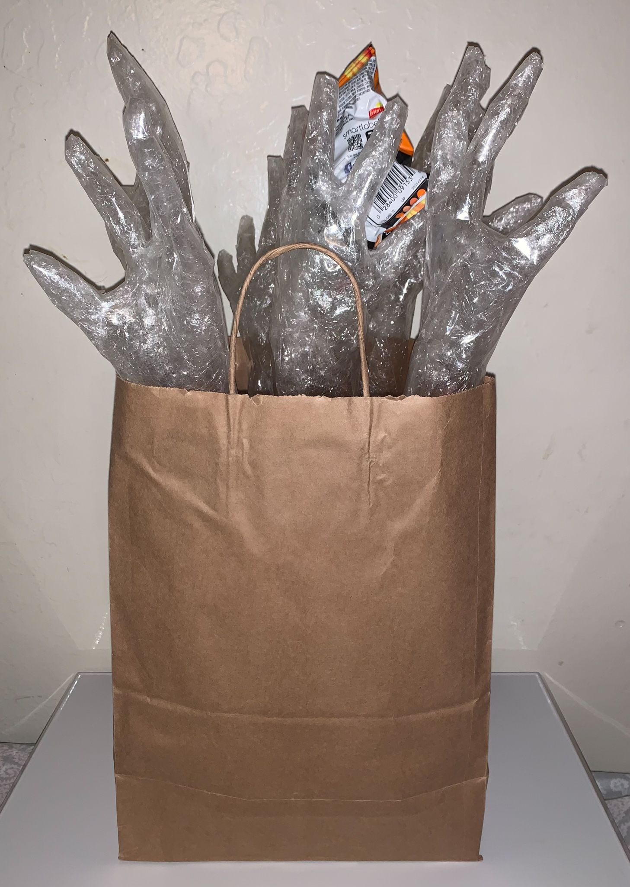
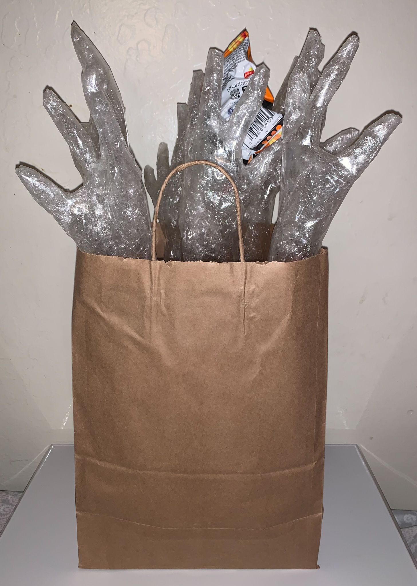
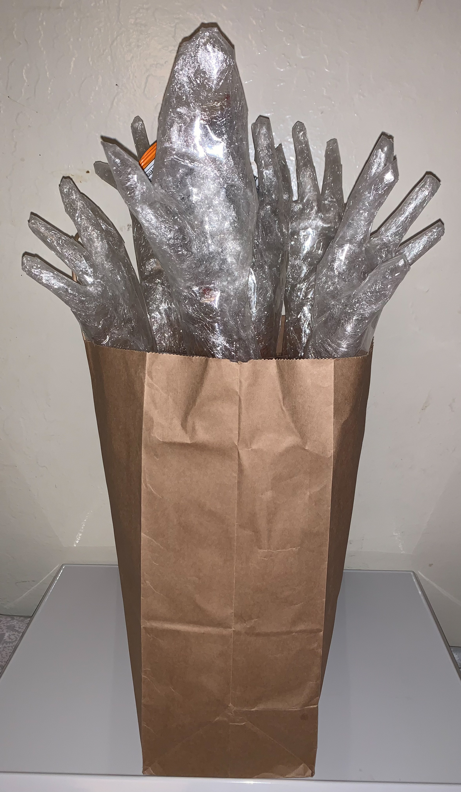
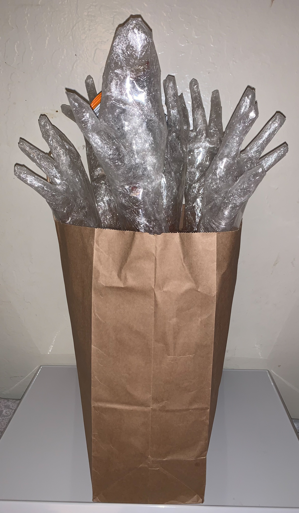
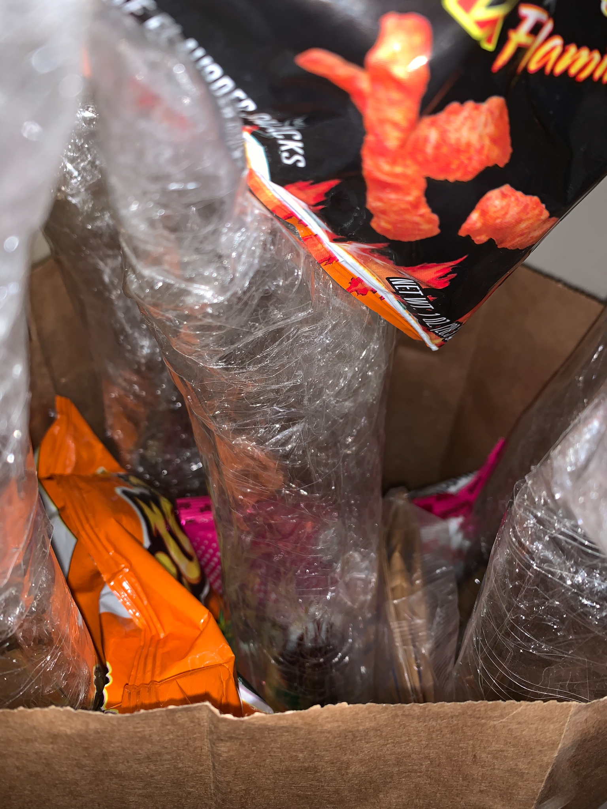
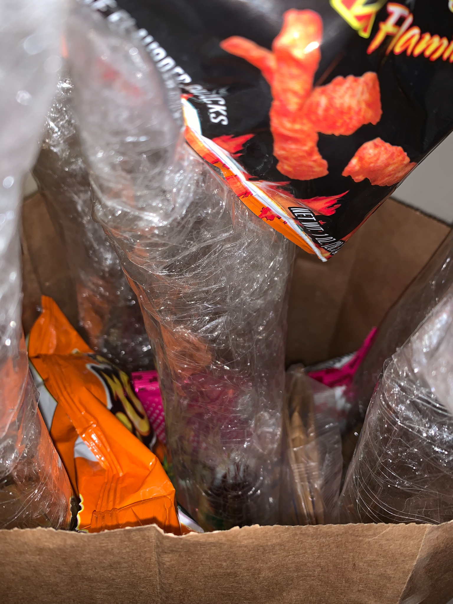
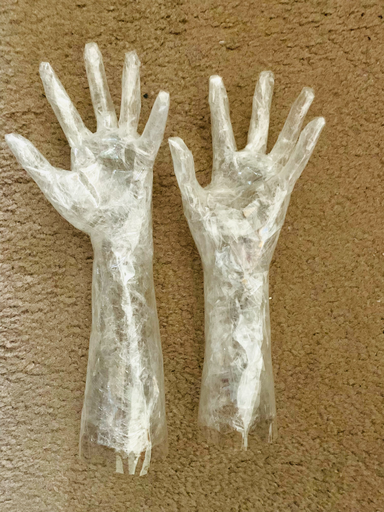

JOZEY NGUYEN
Two Tones & Three Tones

 

 

 


Process



Drawing, 2020
Art 24: Drawing I | Tone Assignment
This was for an assignment where we had to take three photos and put them into two & three tones. We had to make them completely black and white for two photos which is the first photo shown. I had taken the photos traced and shaded in the shadows. The dog photo is of my large half Sharpei and half Pitbull dog at the time, which I created a three tone assignment with tracing paper, glue, and colored paper (black and grey).